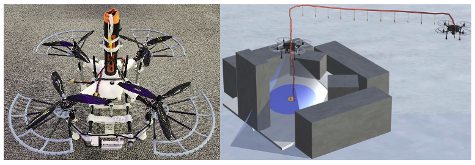

New York University, NYU Abu Dhabi
This project aims to solve the challenge of safely landing drones in environments with high obstacle density, such as urban rooftops, disaster zones, or dense forests. We design an autonomous system that performs real-time landing site evaluation and selection, ensuring precision landing even in spatially constrained scenarios.
The system uses onboard RGB-D sensors for rich 3D scene understanding and employs a fast decision pipeline to compute safe and stable landing locations at a rate of 1 decision per second (1 DpS), supporting time-sensitive and safety-critical missions.
